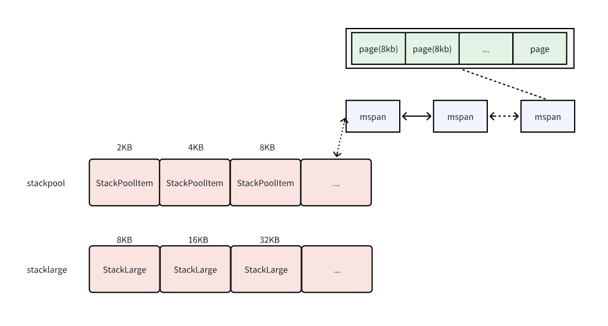
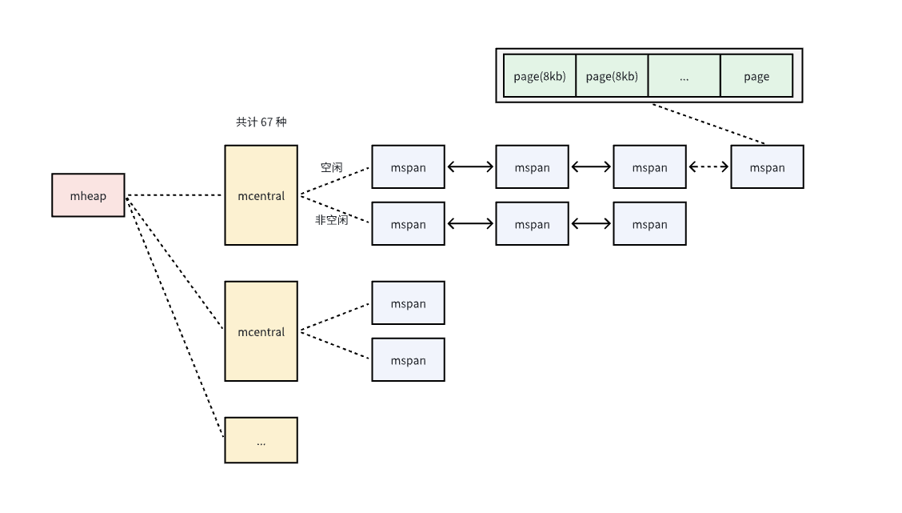

Ch06-GoLang 之 内存分配
October 30, 2024
在栈上分配和回收内存的开销很低，只需要 2 个 CPU 指令：PUSH 和 POP，一个是将数据 push 到栈空间以完成分配，pop 则是释放空间，也就是说在栈上分配内存，消耗的仅是将数据拷贝到内存的时间，而内存的 I/O 通常能够达到 30GB/s，因此在栈上分配内存效率是非常高的。
在堆上分配内存，一个很大的额外开销则是垃圾回收。Go 语言使用的是标记清除算法，并且在此基础上使用了三色标记法和写屏障技术，提高了效率。
Stack 和 Heap #
Stack #

Heap #

- mspan 是内存管理的基本单元
- mcache 负责线程本地内存的快速分配
- mcentral 全局协调 mspan 的分配与回收
- mheap 掌握整个堆内存，并于操作系统交互
内存逃逸 #
在Go语言中，内存逃逸是指在编译时，由于某些原因，编译器决定将本应在栈上分配的变量分配到堆上，这种现象就叫做内存逃逸。
常见原因 #
指针逃逸
当函数返回一个指向局部变量的指针时，该局部变量就会发生内存逃逸。因为栈空间的生命周期与函数调用紧密相关，函数返回后栈空间会被释放。如果返回指向局部变量的指针，该变量必须在堆上分配，以确保在函数返回后依然能够被正确访问。
func run() *int {
num := 10
return &num
}
# go build -gcflags "-m -l" main.go
# command-line-arguments
./main.go:6:2: moved to heap: num // num 作为局部变量，却被以指针的形式返回了。这样，外部变量使用的时候就相当于使用了一个指向局部变量的指针
./main.go:12:13: ... argument does not escape
动态类型
func main() {
num := 1
fmt.Println(num)
}
# command-line-arguments
./main.go:7:13: ... argument does not escape
./main.go:7:14: num escapes to heap // 编译阶段无法确定其具体的参数类型，所以内存分配到堆上
闭包引用
当闭包引用了外部的局部变量时，这些局部变量会发生内存逃逸。因为闭包可能在其外部函数返回后仍然存在并被调用，为了保证闭包能正确访问这些变量，这些变量必须在堆上分配。
func closure() func() int {
var num int = 10
return func() int {
num++
return num
}
}
# command-line-arguments
./main.go:4:6: moved to heap: num // 闭包函数引用了外部变量 num，导致变量 num 被分配到了堆上
./main.go:5:9: func literal escapes to heap
栈空间不足
如果局部变量占用的空间过大，超过了栈空间的限制，编译器会将其分配到堆上。Go 语言的栈空间大小是有限的，不同平台可能有所不同。对于较大的结构体、数组或切片，如果它们的大小超过了栈空间的限制，就会发生内存逃逸。
func run() {
var arr []int = make([]int, 1000000)
fmt.Println(arr)
}
go build -gcflags "-m -l" main.go
# command-line-arguments
./main.go:6:22: make([]int, 1000000) escapes to heap // 分配了
./main.go:7:13: ... argument does not escape
./main.go:7:14: arr escapes to heap
影响 #
- 性能影响：堆内存的分配和回收由 Go 语言的垃圾回收器（GC）管理，相比栈内存的分配和释放（栈空间随着函数调用结束自动释放），堆内存操作的开销更大。频繁的内存逃逸会增加垃圾回收的压力，降低程序的性能。
- 资源消耗：堆内存的使用会占用更多的系统资源，尤其是在处理大量数据或高并发场景下，过多的内存逃逸可能导致内存占用过高，甚至引发内存溢出错误。